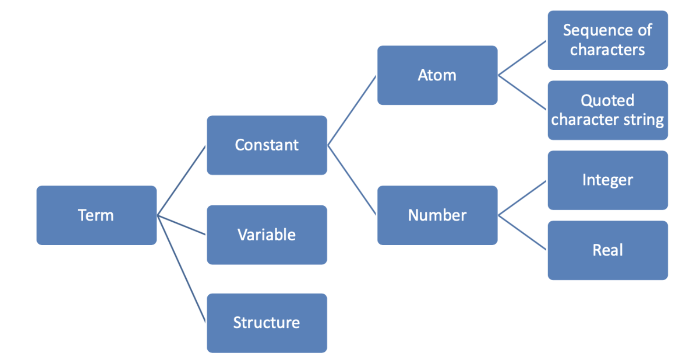

Logical Languages
- Programs are expressed in a form of symbolic logic
- Use logical inferencing process to produce results
- Declarative rather than procedural
- you describe a result/goal and you get it via a blackbox
- compared to procedural where you describe the steps to get to a result
- Declarative vs. Procedural
Symbolic Logic
- Express propositions
- Express relationships btw propositions
- Describe how new propositions can be inferred from other propositions
- First Order Predicate Calculus is the form symbolic logic used for logic programming
- Operators: connect 2+ atomic propositions
- conjunction, disjunction, negation, implication
- Quantifiers: include variables in propositions
- universal
- existential
Clausal Form
- A standard form for propositions that helps with organization
- Restriction on how statements can be formatted allows logic programming systems to prove theorems mechanically
- If all A's are true, then at least one B is true
Horn Clauses
- Further restriction that insists all statements be in the form of a head (LHS) and a body (RHS)
- the head is a single atomic proosition (or term in prolog)
- the body is a list of atomic propositions (or terms in prolog)
- the conjuction of the terms in the body implies the head
- a clause with no body is a fact
- a clause with both sides is a rule
- a clause with no head is a goal/query
Resolution Principle
- Formalized by Alan Robinson in 1965
- How implications can be combined to obtain new implications
- Ex: If
clause1impliesclause2andclause2impliesclause3thenclause1also impliesclause3
- Ex: If
Prolog
- First appeared in 1972
- Provide
- facts/axioms (the knowledge base)
- rules/theorems (if condition, then also conclusion)
- goals/hypothesis (queries)
- Can be thought of declaratively or imperatively
parent(kim, holly)defines a predicateparentof arity 2 (sometimes written asparent/2)
Terms

Process
- State a series of facts and rules that the interpreter collects in its DATABASE
- Pose a query/goal and Prolog attempts to find inference steps (and assignments of values to variables) that allow it to prove your query starting from the facts
Facts
- Knowledge base to build new rules from (aka the world or the universe)
- Horn clauses with no body
mother(mary, fred). % predictate making mary a mother of fred
Rules
- Describe known implications/relations
- Rules are theorems that allow the interpreter to infer things
- Horn clauses with both a head and body
- To be interesting, rules generally contian variables
- Ex: If X barks, then X is a dog
- Horn Clause: dog(X) barks(X)
- Prolog Syntax:
dog(X) :- barks(X).
- Ex: For all X, X is emplyed if there exists a Y such that Y employs X
employed(X) :- employs(Y, X)- Does NOT say that X is employed only if threre is a Y that employs X
Goals
- Query/reasoning about the world
- Prolog attempts to satisfy the goal
Unification
- Process by which compatible statements are merged
- Query asked is the interpreter's original goal
- In an attempt to satisfy the goal, interpreter looks for facts or rules with which the goal can be unified
- Trivial unification: goal can be unified with itself
- A variable without a value yet but which corresponds to a constant/value in another clause gets instantiated with that value
- Ex:
studies(charlie, X)is unified with the factstudies(charlie, cs3270)and the variableXis instantiated tocs3270
- Ex:
SWI Prolog
- Prompt a query with
?- consultis a predefined pedicate to read a program from a file into the database (load in a knowledge base and rules from a.PLfile)?- consult('database.pl')
- Goal:
?- barks(X).
X = fido.
?- dog(fido).
true.
woman(jean). % fact
man(fred). % fact
wealthy(jean). % fact
happy(Person) :- woman(Perosn), wealthy(Person)
-
jeanandfredare constants/atoms b/c they start w/ lowercase letter -
Personis a variable b/c it starts w/ uppercase letter (could also just be an underscore) -
Wil return first answer it finds to a query
- Press Y or Enter if thats all you want
- Press ; N or Spacebar if you want prolog to continue searching for other possible answers
-
Pressing
aaborts anything and returns you to the prompt -
When entering a query if the value of an arugment doesn't matter to you use
_
Conjunction & Disjunction
-
Rules & Conjunction (AND):
B(X) :- A(X), C(X), D(X). -
Rules & Disjunction (OR):
-
B(X) :- A(X). B(X) :- C(X). B(X) :- D(X). -
Can combine disjunction and conjunction using the above syntax
Variable Scope
- Variable scope is the clause in which it appears
- appears first on LHS -> universal quantifier
- appears first on RHS -> existential quantifier
- Ex:
grandmother(A, C) :- mother(A, B), mother(B, C)- For all A, C [A is the grandmother of C if there exists a B s.t. A is the mother of B and B is the mother of C]
How Prolog Works
- Interpreter starts at beginning of database and looks for soemthing to answer current goal with
- If it finds a fact, it succeedds
- If it finds a rule, it attempts to satisfy the terms (or subgoals) in the body/rhs left-to-right and depth first
- this ordering is prolog specific, not logic programming in general
- when attempting resolutions
- interpreter pushes current goal onto a stack
- makes the first term/subgoal in the body the current goal
- Goes back to the beginning of the database and starts looking again
- if interpreter gets thorugh first term/goal of a body succesfully, it continue with the next one
- if interpreter gets all the way through the body, the goal is satisfied and backs up a level and proceeds
- if interpreter fails to satisfy the terms in the body of a rule, the interpreter undoes the unification of the lhs (includes uninstantiating any variables given values as a result of the unification)
- backtracks and keeps looking through the database for something else with which to unify
- if interpreter gets to end of database without succeeding, it backs out a level and continue from there
- Ordering of database and left-to-right pursuit of subgoals makes prolog not purely declarative
- changing order of statements in database can give different results (including infinite loops or less efficiency)
Infinite Recursion
- Can occur since order matters in rule evaluation
- Can usually avoid by following 2 best practices:
- make rules right recursive
- put base cases first
List Processing
- Enclosed in squre brackets w/ elements separated by commas
|operator separates head of list from rest of list=means unification
?- [H | T] = [1, 2, 3, 4, 5].
H = 1.
T = [2, 3, 4, 5].
- Can construct litss using the same syntax as destructing lists:
?- Lst = [1 | [2, 3, 4, 5]].
Lst = [1, 2, 3, 4, 5].
-
predicates for list processing:
-
member- performs a membership test-
implemented as:
-
member(X, [X|_]). member(X, [_|Xs]) :- member(X,Xs)
-
-
append- append 2 lists -
remove- remove 1st occurence from a list -
filter- keep only elements that satisfy a predicate
-
-
Assign
H1andH2to the first two elements of a list
?- [H1 | [H2 | T]] = [1, 2, 3, 4]
H1 = 1,
H2 = 2,
T = [3, 4].
% or
?- [H1,H2|T] = [1, 2, 3, 4].
H1 = 1,
H2 = 2,
T = [3, 4].
- Prolog predicates only return
true/falsedepending on whether the predicate can be satisifed or not - To return a value from a rule/predicate, an additional parameter is needed to carry back the result
- Ex:
append([a,b,c], [d,e,f], Lst)Lstis the output paremeter that contains the two input lists appended together
- Ex:
% my_append -- Appends two lists.
my_append([], Lst2, Lst2).
my_append([Head|Tail], Lst2, [Head|Result]) :- my_append(Tail, Lst2, Result).
% my_remove -- Remove the first occurrence of an item from a list.
my_remove(_, [], []).
my_remove(Item, [Item|Tail], Tail).
my_remove(Item, [Head|Tail], [Head|Result]) :- Item \== Head, my_remove(Item, Tail, Result).
Logical Problems
- Prolog is great for solving logic problems
- also known as constraint programming
8 Queens Problem
- Represent a queen's position with
queenpredicate (e.g.queen(2, 5)means there is a queen at position (2,5) on the board) - We want a list containing 8 elements with the position of each queen
nocheck(_, []). # base case of empty list
nocheck(X/Y, [X1/Y1 | Rest]) :-
X =\= X1, #not in same row
Y =\= Y1, #not in same column
abs(X - X1) =\= abs(Y - Y1), # not in same diagonal
nocheck(X/Y, Rest).
legal([]). # base case of empty list
legal([X/Y | Rest]) :-
legal(Rest),
# try all possible positions of (x,y)
member(X, [1, 2, 3, 4, 5, 6, 7, 8]),
member(Y, [1, 2, 3, 4, 5, 6, 7, 8]),
nocheck(X/Y, Rest).
# we want only the lists of size 8 (dont return all the others)
X = [_, _, _, _, _, _, _, _], legal(X).
# further restrict outputs to be in the desired order
X = [1/_, 2/_, 3/_, 4/_, 5/_, 6/_, 7/_, 8/_], legal(X).